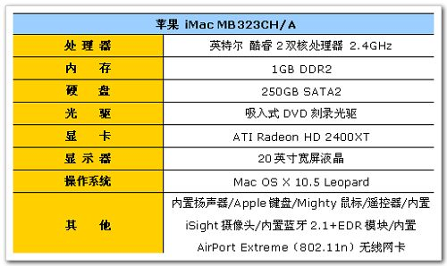

1、昨天，我拥有了梦寐以求的苹果电脑，嘿嘿~
没考虑笔记本是因为它的性能配置都不如台式机，再者大概只有旅行的时候会携带电脑笔记本，每年最多一到两次发挥一下作用，平时还是用台式更好些。这台苹果有无线上网功能，不需要网线就可在家上网，屏幕+鼠标+键盘，清爽，省了空间。加了1G内存条，装了双系统，XP和苹果操作系统。
以后不用担心色差，不用担心照片洗出来和在屏幕上看到的效果不同，是不是？苹果的界面做的那么绚，会多点乐趣。

2、这一天正式成为Salsa舞的学员。
发现自己跳舞原来这么卖力，以至于老师换了个练健美的男伴都搬不动我的旋转，Salsa舞女伴要放松上肢让男伴带着舞动，完全是被动的，象罩在笼子里游走的感觉。而我几乎“不依赖”伙伴的信号和力量。课后一位大叔传授了他的经验，才明白，女人无论在生活还是在摩登舞中，作个“弱者”，并没什么不好，至少可以获得怜悯与呵护，不是吗？任何事情只要男人操心与安排，你只管放松地跟着他的舞步就好了。不过，你得有好运气跟着一位值得信任的伙伴。
先前的自信满满，受到了小小的挫折。
完美主义者总是生活在不断的自责中。
记得以前长期不运动，然后参加某项运动，第二天身体某些部位的肌肉会酸痛，走路或上楼梯要很缓慢，甚至大笑也会不小心牵引出酸痛感。这次，除了出出汗，半只脚疼疼，运动量对于我是不够的。当然这不是塑体也不是每天例行的舞蹈练功，而，只是，轻松地跳跳摩登舞，而已。在跳舞中我会更快乐。
3、1/4冰西瓜就是我的晚饭。
晚上快11点看了部电影：《杀手没有假期》，黑色喜剧片，具有英式幽默感 。
*怀疑做片絮的编辑当时一定有着无法排解的憎愤，无数的FUCK、FUCKING、FUCKER...被编辑在片絮中，看得人头晕。据说“FUCK”这个单词以及由此衍生出来的词语被提到过126次，也就是平均每分钟就有人说到1.18次。
*常言道：生活就象强奸，如果不能反抗，就好好享受吧。这电影最后也挺无奈的，有点玩笑似的结束了。余华说：“有小的愤怒时你可以直接表达愤怒，但当你有大的愤怒时你就要用荒诞的方式去表达，这样才有力量。”
*电影原声不错。
*该片获得2008年第九届金预告片最佳原创作品奖。
*看得很沉闷，或许以前我更喜欢看这类风格的电影，现在我只想看些轻松的影片。
*故事发生在布鲁日（Brugge），比利时著名的中世纪古城，Brugge荷兰语是“桥”的意思，布鲁日是座水城，河道遍布城里，很多哥德式文艺复兴时期的建筑依河道而建。天鹅是这个城市的象征，被称为比利时的威尼斯。DVD里详细介绍了这个古城。

16 Responses to “8月20日”
2008-08-21
你的APPLE的本本是哪个型号的啊？
APPLE的操作还是要习惯一段时间的
2008-08-21
Macintosh系统的确比Windows好用，唯一不方便的可能就是软件少一点，比如fs2you这些下载网站的插件就不提供Mac版的…
2008-08-22
很佩服家用电脑用苹果，你现在的舞伴是好运还是？
2008-08-22
在跳舞中学习妥协，在妥协中享受快乐。
2008-08-22
我一直都是用Mac做开发的，用惯Windows的人的确需要一段时间适应。其实不用装双系统，你加了内存，需要用Windows时在Mac上再跑个虚拟机就可以了。
2008-08-22
虚拟机?是什么概念呀?
2008-08-22
1.你是一个标新立异的时尚女士。
2.你浑身上下的各个器官可能都很完美可能都属No.1,脚No.2.
呵呵，个人意见，可能忠言逆耳。
2008-08-22
夜行锦衣 Says:……
楼上说的虚拟机是不是VMware
2008-08-22
星巴克里白领丽人用苹果电脑上无线WIFI，全面小资了！
小资泡星巴克的必备用餐装备！
首先你必须带一本杂志，啥？《读者》？呸，还不如直接看店里的，拿那个你只配去火车站买杯豆浆蹲着喝去。中文的杂志一律PASS！必须得英文原版的！什么？《Reader’s digest》? 我说你有完没完啊？！按照小资圣经——保罗．福塞尔写的那本《格调》里面所说，连《国家地理》《TIME》之类的杂志都只会暴露出你庸俗的小中产阶级格调，可笑我们还老拿某某上了《TIME》封面说事儿，起码得拿本《Economist》吧，或者《FORTUNE》，后两个杂志的中文版是可以免费申请赠阅的，一般人我不告诉他! 手机的话怎么也得带个Iphone，甭管多不好用，版本一律破解成阿拉伯语或者希伯莱语，倍儿有面子，电话响了先说Bonjour（法语，你好）！再说Guten tag（德语，你好）!你要说HELLO你都不好意思和别人打招呼。 笔记本也得带一个，LV的，接完电话就掏出万宝龙的钢笔在本子上写啊写的，眉头紧皱做日理万机状。 笔记本电脑也得带上，女的一律用MACBOOK，男的都用IBM，反正星巴客里面有无线的WIFI，把什么BT，电驴全都给开上，把网络带宽占得死死的，这样一来就你一人能上网，叫别人眼红去吧!去之前记得在电脑里把金山词霸给装上，不然英文杂志读不下来啊…… 咖啡杯决不能用店里的，不就一大瓷杯子么，上Hermes的，一千块一个，到了店里收银完了把杯子递过去，跟小姐特客气地说：麻烦您用这个杯子装咖啡,别的杯子我喝不惯…… 坐下来先把车钥匙往桌上一扔，不是BENZ就是BMW，最次也得AUDI，扔的时候得用劲扔，把所有人都吓一跳那种，然后大声地自言自语：这德国货质量就是好，这么用力都摔不坏啊(友情提示，买不起车你还买不起钥匙吗，上淘宝啊。) 着装你可千万别穿西装领带，叫人笑话，要的就是休闲气质，先穿件长袖POLO衫，外面再套件长袖灯芯绒衬衫，然后再套件苏格兰格子的呢衬衫，啥叫格调，领子越多越有格调，脚上穿上拖鞋，一看就是永远待在空调房的贵族啊。 再去银行换几十张一美元的零钞，走的时候丢桌上，穿过大厅的时候就听后面服务员喊：先生您的钱忘记拿了!要的就是这效果。你就缓缓回头，冲她回眸一笑，说：哎呀，我在美国喝咖啡给小费给习惯了，你就收着吧! 于是你就可以在万众仰慕的目光中走出星巴克，天那么蓝，空气那么清新，这是一次多么完美的行为啊!
2008-08-22
Just drink a cup of coffee. I drink coffee everyday. Starbuck coffee is just better than Burg King or McDonald’s. That’s it.
2008-08-22
Oh My God, all this commotion in a coffee shop!?? You got to be extremely empty inside to even come up with that “show”.
2008-08-23
怎么扯到咖啡上了？啊哦~一定是一目50行看过，就开始下结论了。
搞清楚我选的是台式电脑，不是笔记本电脑。而这些照片是在南京珠江路电脑一条街上拍的，而不是什么STARBUCKS！
用苹果、喝咖啡就要被打上“小资”标记？其实，我更爱喝茶，您不知道吧？和我关系亲密的朋友却感觉我有点愤青，无论如何，仅凭BLOG上的三两面就作出某种评价，是否不太成熟呢？
2008-08-23
按我的理解，上面的这位仁兄不过是对9号的长篇的一点感念而已。
即使对你的正文，你又何必如此反诘？文章还是心情，既然公布到网络这种公共区域，就意味着必然会有各种反应，良言自口莠言自口，不同意见不同观点即使恶意即使恶毒，又何必定要奋起反击。你无法期望所有别人接受你接受的东西，你也无法期望所有别人都接受你。
就像电影里的女主人公，其实很多事搞清楚了或者想清楚了，每个人都可能会反思自己为什么有那么大的anger。
记得电影《The Exorcism of Emily Rose》里 Laura Liney 在法庭上说过的一句话（凭记忆）： I dont ask you to believe what he believes, I just ask you to believe him.
我想我们能努力的就是这一点，成为一个可以被相信的人，而不能期望我们所相信的一切会被别人相信，即使是亲人朋友。
宽容，也许意味着接受别人对自己不善，而不是优容地等待别人来和你保持一致，后者更多时候是一种幻想甚至傲慢。
你无法封住别人的嘴，但是可以让自己开口的时候先想一想。你只需要成为你自己，你喜欢和你相信的自己。至于别人说的，smile or shrug off。
2008-08-24
象我大哥的口气~呵呵~
2008-08-27
forget it. i should not say so. totally pointless.
2008-08-29
扯到咖啡上? 哈哈，不是啦，不过看到你说苹果，想起来这个不久前看过的某位高手写得搞笑文章来分享一下，我写不出这么好笑的东西。
Leave A Reply
存档只读，评论已关闭。